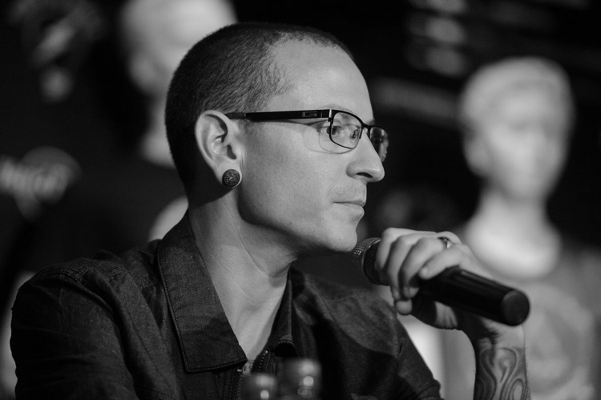
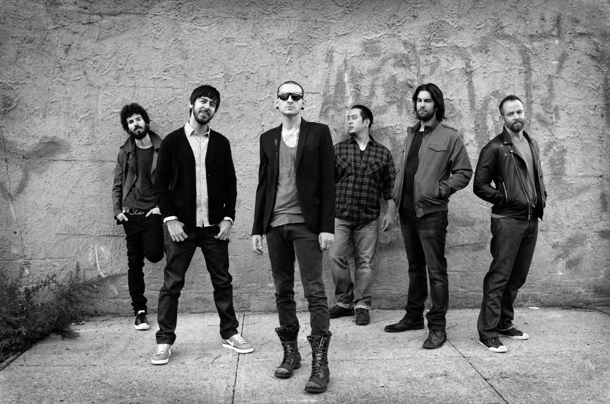

Chester Charles Bennington 1976-2017



Chester Bennington was singer and song-writer, most commonly known as lead singer for Linkin Park. He also served as the frontman for Dead by Sunrise and Stone Temple Pilots. Had six children from two wifes.
Bennington's parents divorced. After the divorce, Bennington started abusing drugs
Bennington leaves Grey Daze and joins Linkin Park, then called Xero
Bennington joins Stone Temple Pilots as lead singer
March 20 1976
1987
1993
1997
2006
May 2015
July 20 2017
Chester was born in Phoenix, capital of Arizona, in family of mother-nurse anf father-police detective
Chester moved in with his mother. Same year he began singing with his first band «Sean Dowdell and his Friends?», later formed Grey Daze
Chester started his solo project Dead By Sunrise
Chester Bennington committed suicide by hanging at his home in Palos Verdes Estates, California
If you want to find out more information about Chester Bennington, click his name
Designed and coded by MaxTheHuman